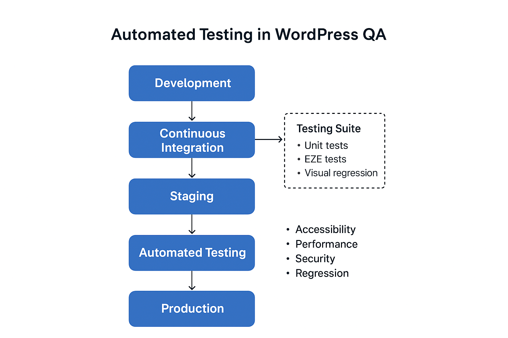

This section outlines an approach for integrating automated testing into the QA process for WordPress sites to save time, reduce human error, and maintain consistent quality.
Automated testing complements manual QA by handling repetitive and regression tasks efficiently.
| Test Type | Purpose | Example in WordPress |
|---|---|---|
| Smoke / Sanity Tests | Quickly verify critical flows work | Login/logout, homepage loads, contact form submission, post creation |
| Functional / End-to-End Tests | Verify complete workflows | Publish a blog post, submit a form, add items to a gallery, slider functionality |
| Regression Tests | Ensure updates don’t break existing features | Theme updates, plugin updates, custom functionality |
| UI / Visual Regression | Detect unintended design changes | Compare dev site to design comp (pixel-by-pixel or layout snapshots) |
| Accessibility Tests | Validate WCAG 2.1 compliance | Keyboard navigation, ARIA roles, contrast ratios |
| Purpose | Recommended Tools |
|---|---|
| End-to-End / Functional | Cypress, Playwright, Selenium |
| Visual Regression | Percy, BackstopJS, Applitools |
| Unit Testing / PHP | PHPUnit (custom plugins & theme functions) |
| Accessibility | Axe-core (integrated in Cypress/Playwright) |
| CI/CD Integration | GitHub Actions, GitLab CI, CircleCI |
